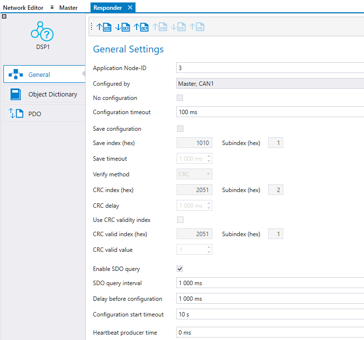
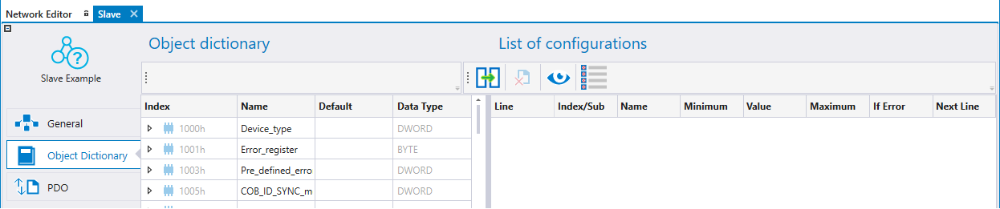
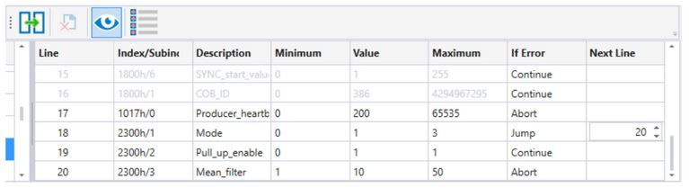
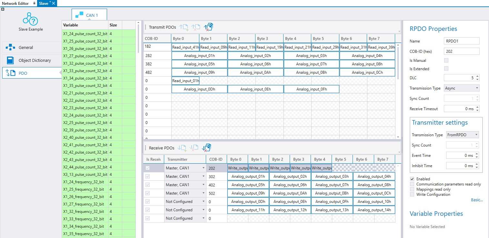
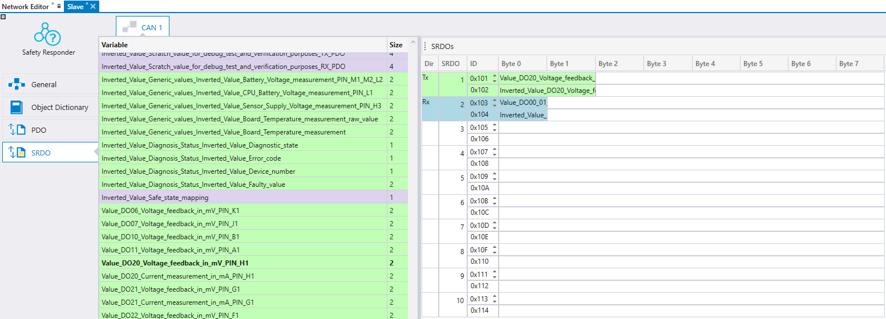
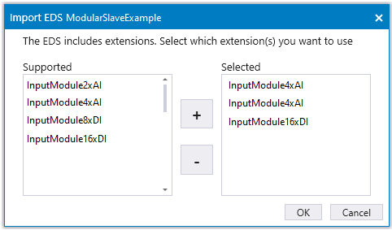

For further information about configuring Epec CANopen slave devices, see Configuring Epec CANoslavelave Units
This topic describes CANopen slave configuration of generic devices in MultiTool Creator. CANopen slaves, such as sensors and actuators, are devices that have configurable input and output interface as well as communication parameters. A CANopen slave device defines the slave's input and output behavior with SDO messages. Usually, the input data from the CANopen slave is transferred via transmit PDO messages (TPDO) and depending on the device, it’s also possible to define RPDOs.
To configure the slave device, an EDS or a DCF file is needed. These file types are defined by CANopen standard (CiA DS306 and CiA DS311). The EDS (Electronic Data Sheet) file describes the communication behavior and object dictionary of a non-configured CANopen device. The DCF (Device Configuration File) file is an extended EDS file including more specific details for a specific network, such as node-ID, baud rate and other parameter values.
When using CANopen slaves with Epec devices, it is possible to define the PDOs of slave devices in MultiTool Creator. When the system starts slave a slave device is rebooted, the master device is able to write the PDO mappings and communication parameters to the slave device. It is also possible to define the OD index of the slave device to be configured as well.
|
|
For further information about configuring Epec CANopen slave devices, see Configuring Epec CANoslavelave Units |
To configure a slave device, add a slave device and a programmable Epec device to the MultiTool Creator project. Then, add both of the devices to the same network (Adding, Editing and Deleting Network).
To select the Epec device that configures the slave device, double-click the slave device and select the Epec device listed in the Configured by drop-down menu. The network should contain only one unit as an NMT master and by default, that unit has been selected to configure the slave unit. Configured by drop down menu only contains units where NMT protocol has been set to the NMT master.
|
Setting |
Description |
|
No configuration |
No configuration is written to the slave from the Configured by unit, even if configuration is made to the slave unit. |
|
Configuration timeout |
The timeout for configuring one object dictionary index. |
|
Save configuration |
Save configurations to slave unit's nonvolatile memory. This expedites the system's boot up because the slave needs to be configured only when the desired configuration is changed or the slave unit is changed to another one. Selecting save configuration enables Verify method selection* If verify method selections is not supported, the CRC verification is in use. |
|
Save index |
slave's OD Index used to save configuration.* |
|
Save timeout |
Timeout for the response from slave unit to save SDO command.* |
|
Verify method |
Configuration's verification method*. Default CRC.
|
|
CRC index |
slave's OD index which contains its CRC.* |
|
CRC delay |
Delay after save command before the CRC validity or CRC value is read from slave.* |
|
Use CRC validity index |
slave unit supports CRC valid index. |
|
CRC valid index |
slave unit OD index which contains its CRC validity value.* |
|
CRC valid value |
Value in CRC valid index when CRC is valid.* |
|
Enable SDO Query |
Enables the sending of consecutive SDO queries to node, to determine its presence.* |
|
SDO query interval |
Interval time (ms) for consecutive SDO queries.* |
|
Delay before configuration |
Delay (ms) that configuration waits after reset before operation. |
|
Configuration start timeout |
Delay time (s) of BusNotOk error. Possible SDO polling is also stopped after delay. |
|
Hearbeat producer time |
This can be adjusted and is automatically edited to the slave object dictionary and added to the slave configuration list. |
*visible if the selected master unit supports these features.

The Object Dictionary tab is divided into two views. The left side is the slave device's OD and the right side is the configuration list. The configuration list contains all the indexes that the master unit is writing to the slave. Indexes can be added to the configuration by either drag & drop from OD or selecting indexes from OD then selecting between the OD and configuration list.

|
|
It is recommended to configure PDO_Messages using the PDO tab. |
The configuration list contains user added indexes in black color and automatically added indexes (etc. PDO configuration) in gray color. Automatically added indexes are hidden by default.
Select Show All to automatically bring added indexes to visible. The order of the configuration indexes can be changed by drag and drop.
Configure all adds all indexes that have write access to the configuration list if not already there.
By selecting Configure all again, all indexes from the configuration list are removed that have not been edited.

|
Icon |
Short Description |
Description |
|
Add Index |
Adds selected index(es) from OD to the Configuration list |
|
|
Remove Index |
Removes selected index(es) from the Configuration list |
|
|
Show Hidden |
Shows all configuration lines including all automatically added indexes, etc. PDO configurations |
|
|
Configure All |
Toggle button adds all indexes from OD that has write access to the configuration list, if it is not already there. |
|
Property |
Description |
|
Line |
Order number of the configuration index |
|
Index/Subindex |
Index and subindex number of the configuration index |
|
Description |
Description of the index |
|
Minimum |
Minimum value of the index from the OD |
|
Value |
Value that is written to the slave unit |
|
Maximum |
Maximum value of the index from the OD |
|
If error |
If error is enabled only if the master supports it. Continue: If error happens continue to the next line Jump: If error happens jump to another line if configuration Abort: If error happens configuration is aborted |
|
Next line |
Next line points out the line number where configuration will continue in case of error. |
|
Verify |
If verify method readback is selected, the OD index verification can be selected. Default TRUE (except PDO/SRDO disabling and PDO/SRDO mappings disabling steps in automatically generated configurations). |
PDO settings can be defined in the PDO tab. This view shows all the PDOs that are defined in EDS and PDO can not be removed. Also, the Event Time, Inhibit Time and Transmission Type are configurable in the PDO tab. The master device writes the PDO mappings and configurations to the slave device upon startup if Write configuration is set ON for the PDO.
The PDOs sent by the slave device can be received by either the master or any other device on the bus by selecting the receiving device on Received By list. The master unit is automatically set to receive all enabled PDOs from the slave. PDOs received by the slave device are automatically added to the master device's transmit PDOs, but they can be changed there. For more information, see section Transmitting and Receiving PDOs.
Variables on the left side are color coded according to where the variable can be mapped. Read only indexes are colored as green and can only be mapped to TPDO. Write only indexes are colored as light blue and can mapped only to RPDO. Read and write indexes color is purple and can be mapped both TPDO and RPDO.

In slave devices, the RPDO settings are also Transmitter settings that affect transmitter that has been selected to send the message.
SRDO settings can be defined in the SRDO tab. This view shows all the SRDOs that are defined in EDS and SRDO can not be removed. Also, the Information Direction, Refresh Time, Safety Cycle Time, SR Validation time are configurable in the SRDO tab. The master device writes the SRDO mappings and configurations to the slave device upon startup if Write configuration is set ON for the SRDO.
The SRDOs sent by the slave device can be received by either the master or any other device on the bus by selecting the receiving device on Received By list. The master unit is automatically set to receive all enabled SRDOs from the slave. SRDOs received by the slave device are automatically added to the master device's transmit SRDOs, but they can be changed there. For more information, see section Transmitting and Receiving SRDOs .
Variables on the left side are color coded according to where the variable can be mapped. Read only indexes are colored as green and can only be mapped to TxSRDO. Write only indexes are colored as light blue and can mapped only to RxSRDO. Read and write indexes color is purple and can be mapped both TxSRDO and RxSRDO.'
Variables can be dragged and dropped to SRDO messages. Note that a plain variable and an inverted variable must be added to each SRDO message.

The slave configurations can be found from global variable folder slave_Configurations in Codesys 2.3 and from xx_ slave_Configurations variable list in Codesys 3.5. The slave configurations include a configuration list for each slave device. The slave device is automatically configured by the application once the slave device is started up.
If the added slave device is a modular slave that includes extensions, a popup window opens, where the user has to select which extensions are in use in their unit.

Epec Oy reserves all rights for improvements without prior notice.
Source file topic200017.htm
Last updated 25-Jun-2025